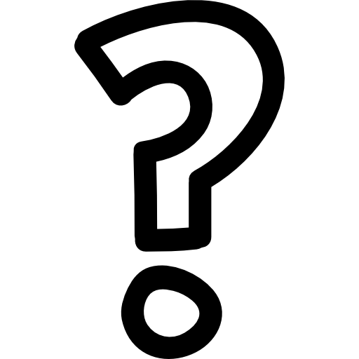

|  |
| Este es Tsugumi Ohba el creador de Death note. |
¿Quien es Tsugumi Ohba?
Hmmm... actualmente se desconoce la identidad de "Tsugumi Oba" ya que este nombre es un nombre artístico...
Teorias del misterioso creador
La teoría más difundida es que se trata de Hiroshi Gamo, otro autor no tan conocido del medio. ¿Cómo se llega a esta conclusión? En uno de los primeros números de Death Note se muestra que la escuela del protagonista se llama Gamo Seminar. Existe una moda bastante difundida de llamar a las escuelas de los mangas en honor a su autor. Lo extraño del asunto es el tipo de mangas creados por Hiroshi Gamo. Quizás el más conocido es Tottemo! Luckyman, una historia bastante infantil con un protagonista llamado Luckyman que protege al mundo de una invasión extraterrestre. No se parece demasiado a la oscura, misteriosa y controversial serie de Death Note.
Trama de Death note
La historia se centra en Light Yagami, un estudiante de bachillerato. Un día, encuentra un cuaderno con poderes sobrenaturales llamado «Death Note», con el cual es capaz de matar personas si se escriben los nombres de estas en él, a la vez que si el portador visualiza mentalmente la cara de quien quiere asesinar. Light, percatándose del potencial del cuaderno, intenta eliminar a todos los criminales y crear un mundo donde no exista la maldad; sin embargo, un misterioso detective privado que se hace llamar L, famoso mundialmente por resolver grandes casos en el pasado, tratará de frustrar sus planes.
| Trailer de Death note |